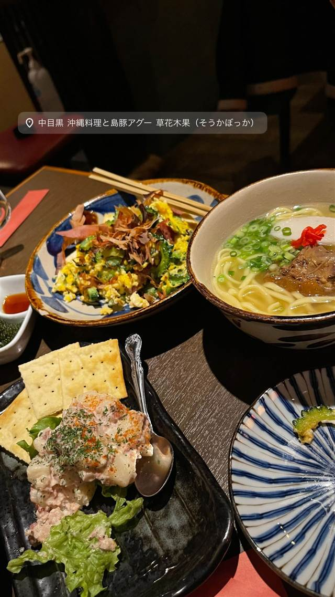

草花木果（SokaBokka）
島豚アグーを一頭買い、沖縄民家風の内装で味わう
中目黒 沖縄料理と島豚アグー 草花木果（そうかぼっか）
中目黒で18年以上続く沖縄料理の老舗。沖縄在来種の島豚アグーを一頭買いし、古き良き沖縄の民家をイメージした店内で、40〜50種の泡盛とともに提供する。テレビ番組「孤独のグルメ」でも紹介された。
TRIVIA
豆知識
- 島豚アグーを一頭買いしているため部位ごとの希少な料理が楽しめる
- 店内は古き良き沖縄の民家をイメージした造り
REVIEWS
世間の評判
3.46食べログ
沖縄料理の味と落ち着いた雰囲気
- ゴーヤチャンプルーやラフテーなど定番料理の味を評価する声が多い
- オリオンビールや泡盛とともに沖縄気分を味わえると評価する声が多い
- 店内は床がベタベタしているなど清潔さの面で不満を感じる人もいる
食べログ 口コミ352件
| 創業 | 中目黒で18年以上営業する老舗（開業年は未確認） |
|---|---|
| 看板 | 島豚アグーの一頭買い料理、沖縄料理全般 |
| こだわり | 沖縄の在来豚「アグー」を一頭買いして提供。古き良き沖縄の民家をイメージした内装 |
| 掲載・評価 | テレビ番組「孤独のグルメ」で紹介された |
| どこから | 都心 |
| 営業時間 | 月〜土 17:00-01:00 日 17:00-00:00、17:00-23:00 |
| 予算 | 夜 ¥3,000～¥3,999 |
| 定休日 | 日曜 |
| 予約 | 予約可 |
| 場所 | 中目黒駅 東京都目黒区上目黒 |
| メモ | 中目黒駅から徒歩1〜2分。泡盛や沖縄クラフトビールを40〜50種類用意 |
食べたもの：沖縄料理
NEARBY
近い店・同じ系統の店
-
 ★
焼肉 中目黒駅
びーふてい 中目黒店
1988年創業、和牛一頭買いで味わう名物ガツン焼き
夜 ¥6,000～¥7,999
★
焼肉 中目黒駅
びーふてい 中目黒店
1988年創業、和牛一頭買いで味わう名物ガツン焼き
夜 ¥6,000～¥7,999
-
 ★
焼肉 中目黒
小野田商店
中目黒の路地裏、七輪で焼く500円前後のホルモン
夜 ¥3,000～¥3,999
★
焼肉 中目黒
小野田商店
中目黒の路地裏、七輪で焼く500円前後のホルモン
夜 ¥3,000～¥3,999
-
 ピザ 中目黒駅
聖林館（セイリンカン）
マルゲリータとマリナーラの2種のみ、国産小麦を長期熟成
昼 ¥4,000～¥4,999 夜 ¥4,000～¥4,999
ピザ 中目黒駅
聖林館（セイリンカン）
マルゲリータとマリナーラの2種のみ、国産小麦を長期熟成
昼 ¥4,000～¥4,999 夜 ¥4,000～¥4,999
-
 ピザ 中目黒駅
ピッツエリア エ トラットリア ダ・イーサ（Pizzeria e trattoria da ISA）
世界ピッツァ選手権優勝のナポリピッツァ職人が焼くマルゲリータ
昼 ¥2,000～¥2,999 夜 ¥3,000～¥3,999
ピザ 中目黒駅
ピッツエリア エ トラットリア ダ・イーサ（Pizzeria e trattoria da ISA）
世界ピッツァ選手権優勝のナポリピッツァ職人が焼くマルゲリータ
昼 ¥2,000～¥2,999 夜 ¥3,000～¥3,999
-
 イタリアン 中目黒駅
関谷スパゲティ
真空圧縮で気泡を抜いた自家製極太麺のナポリタンが730円均一
昼 ～¥999 夜 ～¥999
イタリアン 中目黒駅
関谷スパゲティ
真空圧縮で気泡を抜いた自家製極太麺のナポリタンが730円均一
昼 ～¥999 夜 ～¥999
-
 パスタ 中目黒駅
中目黒 ピッツェリア8
350℃の石窯で焼く本格ナポリピッツァと自家製生パスタ
昼 ¥1,000～¥1,999 夜 ¥3,000～¥3,999
パスタ 中目黒駅
中目黒 ピッツェリア8
350℃の石窯で焼く本格ナポリピッツァと自家製生パスタ
昼 ¥1,000～¥1,999 夜 ¥3,000～¥3,999